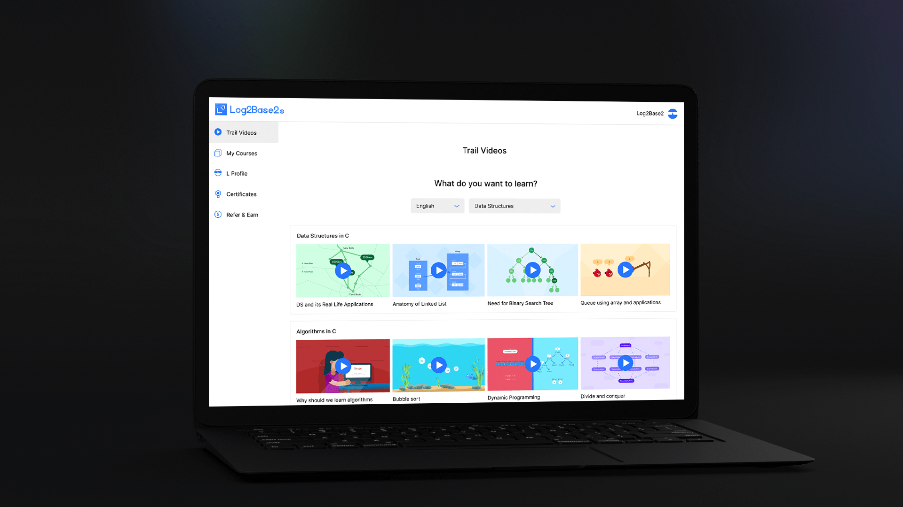
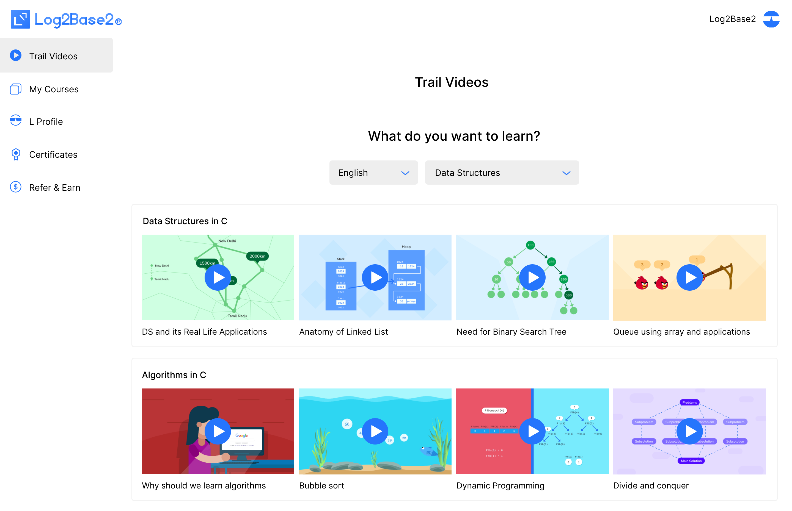
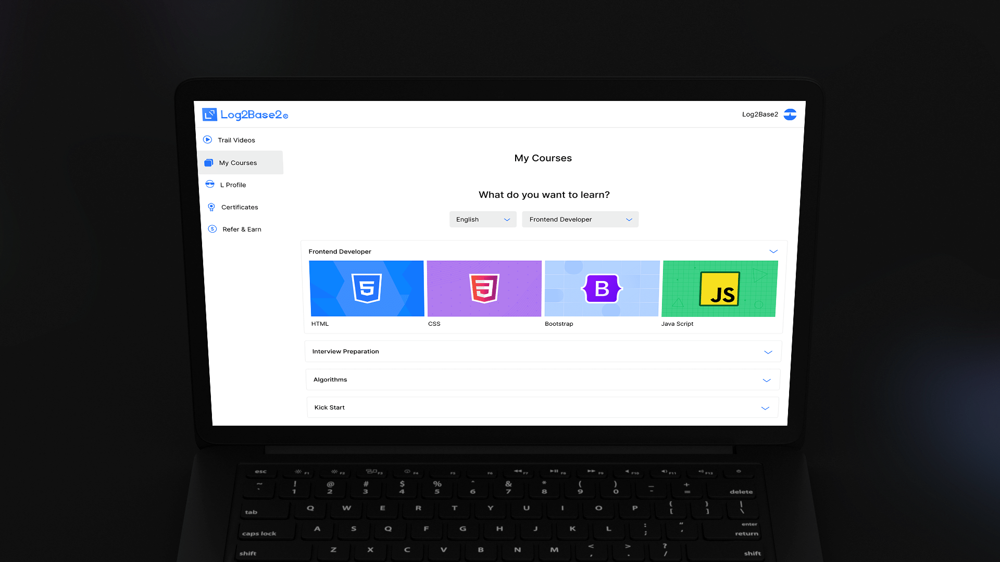
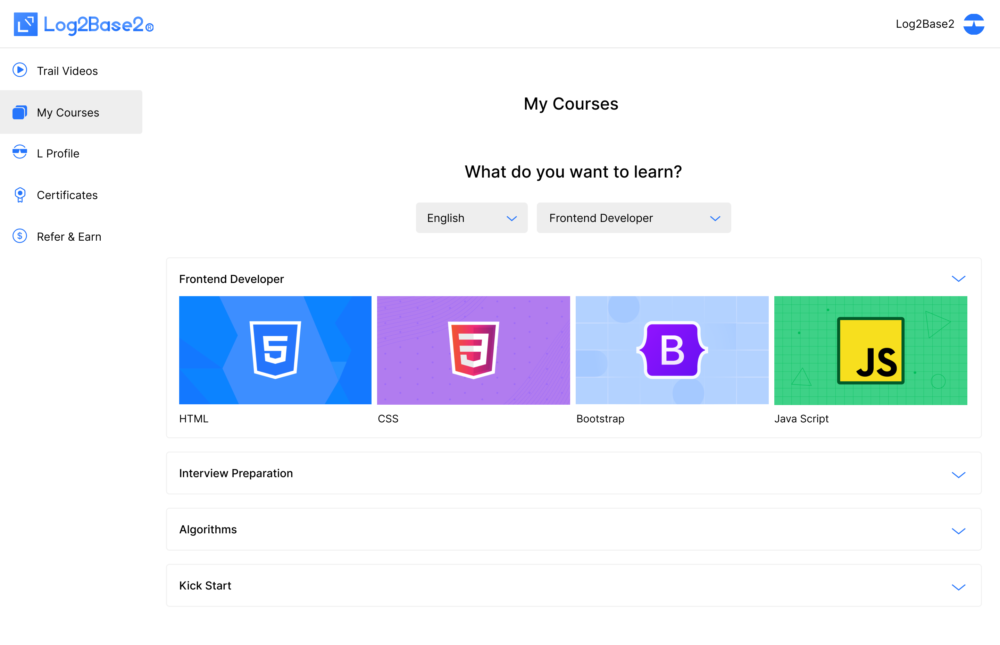
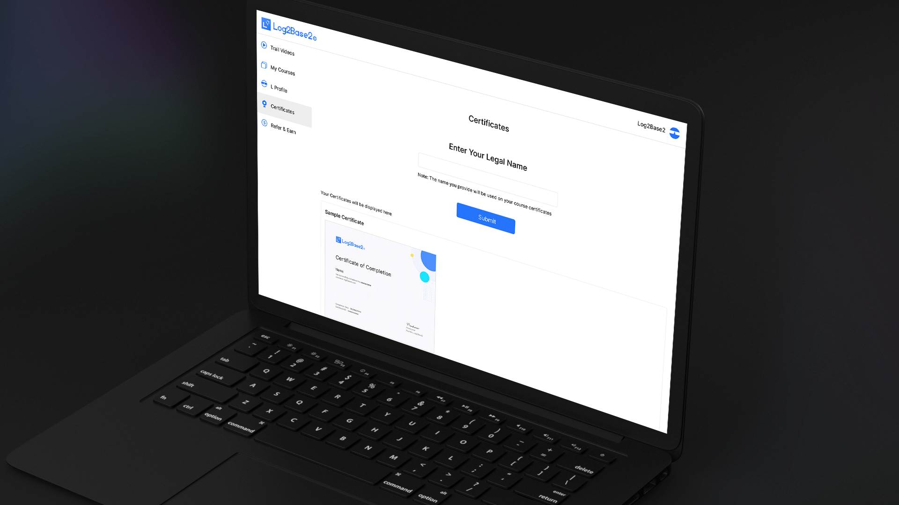
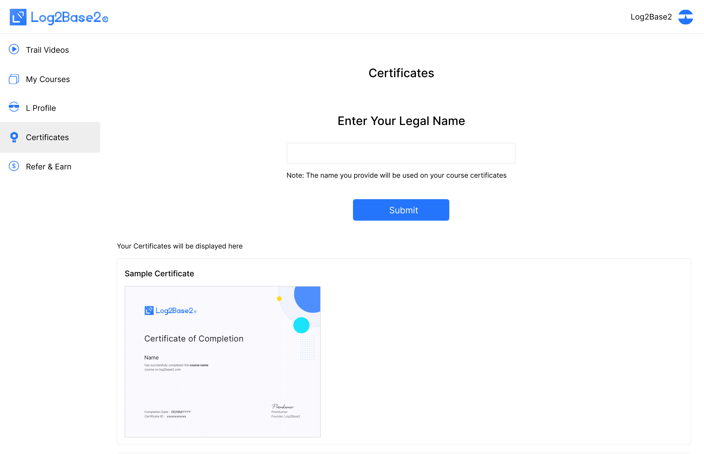
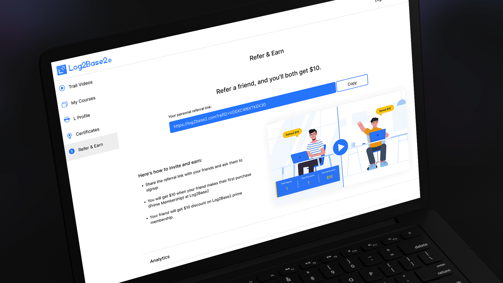
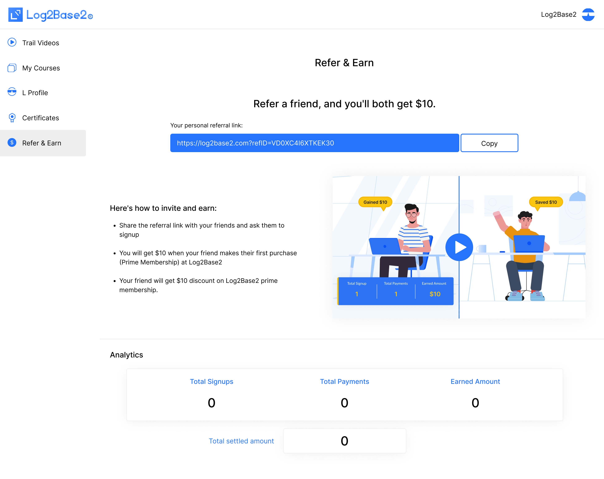

Multi-state dashboard design for the Log2Base2 programming education platform.
Figma | Photoshop
The learner dashboard is the operational heart of the Log2Base2 platform — it's the first screen a user sees after logging in, and it needs to answer three questions instantly: where did I leave off, what should I do next, and how far have I come? The existing dashboard presented all users with a flat, undifferentiated layout that didn't account for different learner states — making the experience feel generic and reducing daily return visits.
The core challenge was designing for multiple user states simultaneously — a new learner with no history, an active learner mid-course, and a returning learner revisiting completed content. Each state had different goals, different data to surface, and different emotional contexts. A single static layout couldn't serve all three effectively. Additionally, the dashboard needed to display progress data without feeling like a report — it had to feel motivating, not administrative.
I led the full UX design process — from user journey mapping and state definition through wireframing, Figma prototyping, and final handoff. I worked directly with the product manager to prioritize what data to surface per state, and collaborated with front-end developers to define component behaviour across breakpoints. Each iteration round is reflected in the designs shown, moving from structural wireframes to polished, production-ready screens.
The layout uses a persistent sidebar for navigation and a dynamic main area that adapts to the learner's current state. Progress is visualised through completion rings and module progress bars rather than raw numbers — keeping the tone motivational. The "Continue Learning" card is always the most visually dominant element, reducing decision time. New learners see a curated onboarding path instead of an empty state, and milestone achievements are surfaced inline to encourage retention.
Delivered a multi-state dashboard system that established a consistent design pattern across the platform's product suite. The component structure and visual language defined in this project were adopted as the baseline for subsequent product screens.







